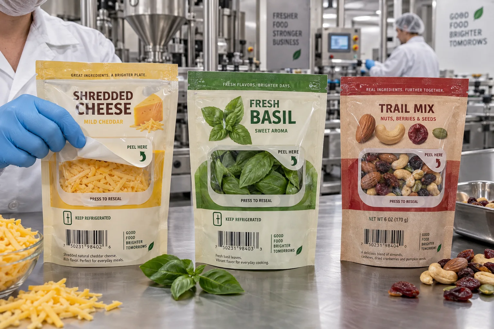

Short answer
Peel-and-reseal labels can add convenient reclosure to pouches and trays, but they must be engineered with the package opening. The label face, peel tab, hinge, release area, resealable adhesive and landing surface need to work as one system.
A standard permanent label can be die cut into a flap shape and look convincing in a presentation. It may even open once. That does not make it a reliable reclosure. Food dust, oil, moisture, cold temperature and repeated bending quickly reveal whether the construction was tested or merely illustrated.
The parts of a label-based reclosure
| Feature | Job | Common failure |
|---|---|---|
| Open tab | Gives fingers a non-sticky lift point | Too small, hard to find or covered in adhesive |
| Hinge | Keeps the flap attached and aligned | Tears or folds into the opening |
| Reseal adhesive | Closes repeatedly against the landing area | Loses tack after crumbs, oil or condensation |
| Cut pattern | Defines the opening without damaging the pack | Weak tear path or incomplete access |
| Barrier design | Protects freshness before and after opening | Opening is larger than the reclosure can protect |
A composite snack-pouch brief
This is a composite planning example. A granola brand wants to replace its zipper with a peel-and-reseal label to reduce package complexity. The package sample is clean and flat, and the first prototype closes beautifully. After five openings, oat dust reaches the landing area and the flap no longer seals at one corner.
The label supplier could respond with a more aggressive adhesive. That may make reopening unpleasant or tear the film. The better review asks whether the opening is too close to the product path, whether the landing area is wide enough and whether a zipper is actually the better format for loose, dusty pieces.
I like label-based reclosure because it can combine instructions, branding and function in one piece. That enthusiasm becomes dangerous when it makes us defend the label after the package has told us no.
Where peel-and-reseal labels work well
- Cheese, deli and produce packs with a controlled opening and broad clean landing area.
- Wet wipes or household products where the flap protects a die-cut opening.
- Dry foods with moderate access frequency and a package engineered for the label.
- Promotional or premium packs where a large functional label also carries instructions.
A zipper often wins when consumers open the pack many times, the product contaminates the seal, the contents are heavy or the opening needs full-width access. A rigid snap lid may win on tubs. Functional labels are useful precisely because they are one option among several, not because every package needs one.
Adhesive zones and deadened areas
The entire back of the label may not use the same adhesive behavior. The lift tab needs a finger-friendly non-tack area. The hinge may need permanent anchorage. The reseal zone needs controlled, repeatable peel. Some designs use patterned adhesive or a dedicated construction so these functions coexist.
That complexity affects dielines and artwork. “Peel here” should sit exactly on the open tab, arrows should follow the intended motion and mandatory copy should remain readable when the flap is open or closed. The graphic designer needs the functional die drawing before placing important text.
Test what consumers actually do
| Test | What it reveals | Suggested observation |
|---|---|---|
| Repeated open/close cycles | Loss of tack, film fatigue and tab usability | Record the target number and failure point |
| Filled-pack storage | Stress, bulging and product contact | Test upright, side and handled conditions |
| Cold or humid exposure | Condensation and adhesive change | Cycle between storage and room temperature |
| Contamination challenge | Crumb, oil or moisture sensitivity | Use the actual product, not a clean mockup |
| Consumer handling | Whether instructions are obvious | Observe people who did not design the pack |
Factory-side view
The best prototype is the one someone opens incorrectly
Packaging teams know where the tab is. Consumers do not. Give an uncoached sample to someone outside the project and watch their first move.
If they pull the wrong corner, tear the pouch or miss the reclosure, the label needs clearer geometry or instructions. That is a design finding, not user error.
Barrier and compliance questions
Reclosure does not automatically restore the original hermetic seal. Define what the package must protect after first opening: spill control, moisture retention, aroma, oxygen exposure or simple convenience. Also state whether the label, adhesive or cut edge can contact food. Compliance documentation must match the actual contact condition and market.
Avery Dennison's reclosure portfolio overview shows how functional labels are designed around repeated opening and package use. It is a useful reference, but the proposed material still needs testing on your film and product.
What to send for a reseal-label review
- Empty and filled package samples using production film.
- Exact opening location, size and cut method.
- Expected number of opening cycles and storage conditions.
- Product contamination risks such as oil, powder or condensation.
- Required barrier function after opening.
- Food-contact condition and destination market.
- Application method, line speed and roll direction.
For ordinary pouch label placement, read Stand-Up Pouch Labels. For moisture-resistant constructions, compare Paper vs Film Labels.
Frequently asked questions
What is a peel-and-reseal label?
It is a pressure-sensitive construction designed to open and close a package repeatedly. Depending on the design, it may lift a flap, expose an opening and reseal against the package or a dedicated landing area.
How many times can a reseal label be opened?
Cycle life depends on adhesive, film, package surface, food contamination, temperature and consumer handling. Specify a target and test filled packs; do not assume one universal number.
Can a reseal label replace a zipper?
Sometimes, especially when a flexible package is designed around a label-based opening. Zippers may still win for heavy products, frequent access or conditions where the landing area becomes contaminated.
Are peel-and-reseal labels food safe?
The full construction must be reviewed for its intended use, including whether any component contacts food directly or indirectly. Ask for appropriate compliance documentation for the market and application.
Related label guides
- Digital vs Flexographic Label Printing: Buyer Guide
- Variable Data Labels: QR Codes, Lots and Serial Numbers
- Glass Bottle Labels That Survive Condensation
Review the complete label construction
Send the package photos, material, finished label size, quantity by artwork, storage conditions and application method. We can review fit, material and production details before preparing a quote and digital proof.